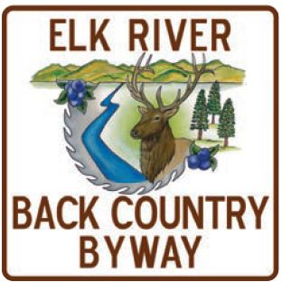

This is an all natural, no frills, individualistic and unpretentious
pathway through rural North Central Idaho. It is a 57-mile route to
adventure, fun and relaxation for travelers of all types. Travelers
quickly enter a vast evergreen forested landscape that draws one
deeper and forward towards the horizon of the clearwater Mountain
range. Through a series of dips and turns the route reveals the
diversity of landscapes in this back country region of Idaho.
From Orofino the route begins with a climb up and along Wells Bench
where ranchettes and farmsteads are scattered along the benches and
between timber patches. As the forested areas get more prevalent,
travelers will drop down towards Dworshak Reservoir, crossing Dent
Bridge, which is a suspension bridge that provides a link to western
Clearwater County and vast forest lands that built the local economy.
Along the path there are opportunities to observe wildlife of many
types: bear, bobcats, cougar, deer, elk, osprey, songbirds, wild turkeys,
possibly wolves and a wide variety of the forest's small woodland
creatures.
Thirty-four miles from Orofino lies Elk River, a quaint
community that has gone full circle: Established as a remote hunting
and recreation camp, developed by Polatch as a mill town (site of the
first electric powered mill), only to return to a recreational community
in the twenty-first century.